Chapter 8 · Part 2 — One Star to Another
He sighed, then sat back on his heels. “Hand me the Pennsylvania book,” he said. They needed the Pennsylvania book to get back home.
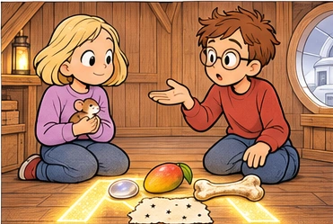
There was silence.
Jack turned and looked at Annie.
“It’s not working, Jack,” she said. “The book’s not here.”
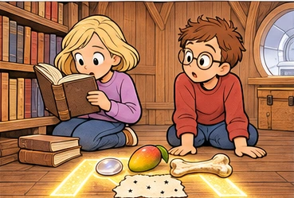
“What?” Was the map the wrong thing?
They looked around the tree house.
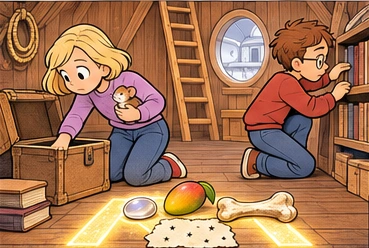
“It’s definitely not here,” said Annie.
“Oh, no.” Jack’s heart sank. He picked up the star map and stared at it.
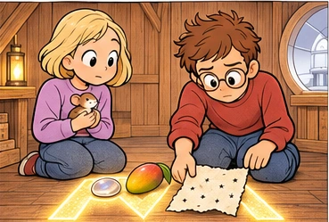
Squeak, squeak. Peanut jumped out of Annie’s arms and scurried back to the letter M.
“I’ve got an idea,” said Jack. He reached into his pack and took out his pencil.
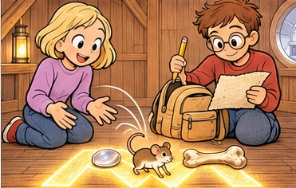
“What are you doing?” said Annie.
“You know how you draw a constellation?” said Jack. “You connect all the stars. What happens if we try that?”
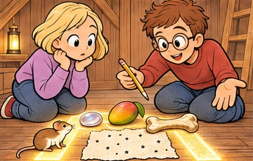
He drew a line from one star to another. He kept drawing, until all the stars were connected.
“Let me see,” said Annie.
Jack held the paper out so they could both study it.
“It looks like a mouse,” said Annie.
“Yeah,” said Jack.
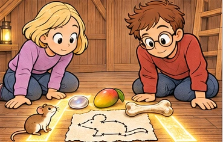
“Is there such a thing as a mouse constellation?” said Annie.
“I don’t think so … ” said Jack.
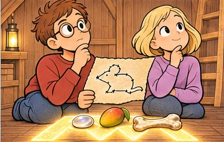
Squeak.
Annie and Jack looked at Peanut. She was standing on the M.
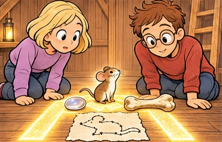
“Oh, wow. Jack,” Annie whispered, “I think I know what the fourth thing is—”
Jack grinned. “Me too,” he said. “It’s a—”
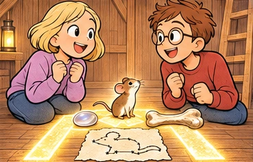
“Mouse!” they said together.
Squeak! Squeak!
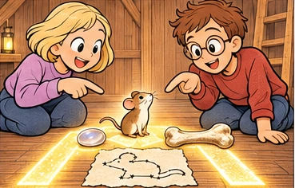
“Maybe the spell is—Moonstone, mango, mammoth bone, mouse!” said Annie.
Jack touched each M thing in turn as he whispered, “Moonstone, mango, mammoth bone, mouse.”
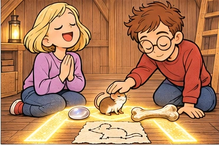
“Let’s say it over and over and see what happens,” said Annie.
Together, they chanted:
“Moonstone, mango, mammoth bone, mouse. Moonstone, mango, mammoth bone, mouse.”
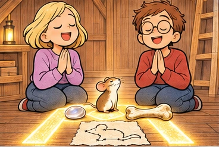
Suddenly, a bright light filled the tree house.
The light got brighter and brighter and brighter.
The brightness was blinding and whirling.
The air spun with brightness.
Then everything was clear.
Peanut the mouse was gone.
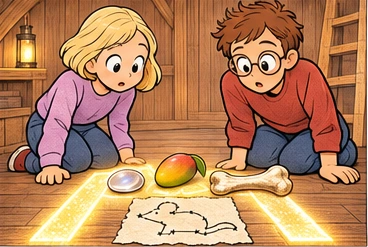
And Morgan le Fay stood before Jack and Annie.
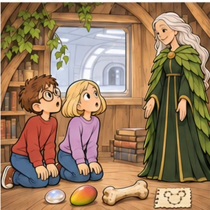